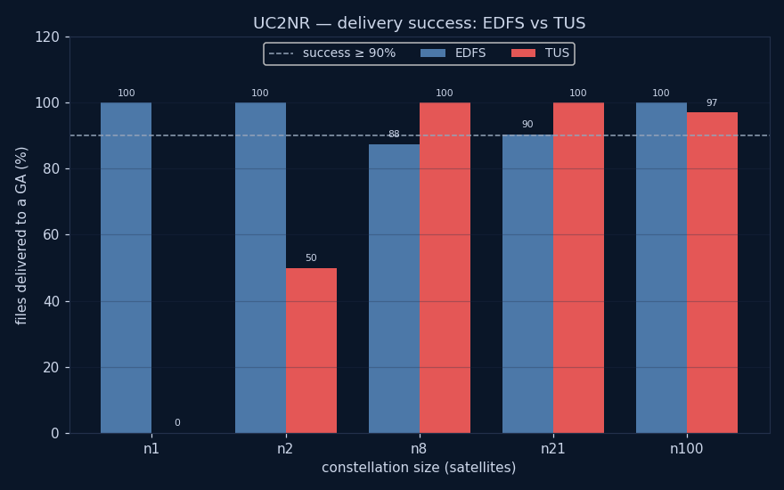

A variant of UC2 with two changes and nothing else:
_common_/oneweb-roster.yaml + synthetic top-up),
the satellites are drawn from a mixed-constellation TLE snapshot (Orbcomm,
Globalstar, Starlink, Iridium-NEXT, OneWeb, Planet — inclinations ~43–97° and
a range of altitudes) and even-strided per sat_count, the same recipe as
big-scale. This spreads the constellation evenly across
orbital regimes rather than clustering it in one shell.intervalJitterPercent: 0, durationJitterPercent: 0, no
per-fsNode seed. To avoid the whole constellation pulsing in and out of fault
together, each fsNode's startOffset is phased by its index (10 buckets at
60…330 s across the 5 m interval), so ~10% of nodes are faulted at any instant
— UC2's intended fault intensity, but with zero RNG.Everything else matches UC2 exactly: engines (TUS, EDFS — same images, keys and
estrack-new-norcia bootstrap peer), hardwareSpecRef: oneweb satellites +
ground-station-hwdef GS, the seven ESTRACK ground stations, the success
condition (a GS holding ≥95% of files), the pinned simulationStartTime,
maxDuration: 6h, and the tier matrix.
UC2's OneWeb shell clusters every satellite in near-identical orbits and its fault schedule is randomised (only reproducible via seed). UC2NR removes both confounders so the EDFS-vs-TUS delivery comparison is driven by an even global constellation under an identical, repeatable fault load — making per-run differences attributable to the engines, not to roster clustering or RNG.
See UC2's README for the full scenario, success condition, parameters and metrics, all of which carry over unchanged.

| variant | engine | priority | RF | sat | produced | files→GS | all? | lastGS(s) | status | delivered % |
|---|---|---|---|---|---|---|---|---|---|---|
| uc2nr-edfs-pdefault-n01-rf3 | edfs | default | 3 | 1 | 1 | 1 | yes | 249 | Success | 100% |
| uc2nr-edfs-pdefault-n02-rf3 | edfs | default | 3 | 2 | 2 | 2 | yes | 272 | Success | 100% |
| uc2nr-edfs-pdefault-n08-rf1 | edfs | default | 1 | 8 | 8 | 7 | no | 1819 | Failed | 88% |
| uc2nr-edfs-pdefault-n08-rf3 | edfs | default | 3 | 8 | 8 | 8 | yes | 4016 | Success | 100% |
| uc2nr-edfs-pdefault-n08-rf5 | edfs | default | 5 | 8 | 8 | 6 | no | 1820 | Failed | 75% |
| uc2nr-edfs-phigh-n08-rf3 | edfs | high | 3 | 8 | 5 | 5 | yes | 3968 | Success | 100% |
| uc2nr-edfs-plow-n08-rf3 | edfs | low | 3 | 8 | 8 | 6 | no | 4660 | Failed | 75% |
| uc2nr-edfs-pdefault-n21-rf3 | edfs | default | 3 | 21 | 21 | 19 | no | 3207 | Success | 90% |
| uc2nr-edfs-pdefault-n100-rf1 | edfs | default | 1 | 100 | 100 | 100 | yes | 1788 | Success | 100% |
| uc2nr-edfs-pdefault-n100-rf3 | edfs | default | 3 | 100 | 100 | 100 | yes | 1732 | Success | 100% |
| uc2nr-edfs-pdefault-n100-rf5 | edfs | default | 5 | 100 | 100 | 100 | yes | 1675 | Success | 100% |
| uc2nr-edfs-phigh-n100-rf3 | edfs | high | 3 | 100 | 100 | 100 | yes | 1845 | Success | 100% |
| uc2nr-edfs-plow-n100-rf3 | edfs | low | 3 | 100 | 100 | 8 | no | 5549 | Failed | 8% |
| uc2nr-tus-n01 | tus | - | — | 1 | 1 | 0 | no | n/a | Failed | 0% |
| uc2nr-tus-n02 | tus | - | — | 2 | 2 | 1 | no | 263 | Failed | 50% |
| uc2nr-tus-n08 | tus | - | — | 8 | 5 | 5 | yes | 4659 | Success | 100% |
| uc2nr-tus-n21 | tus | - | — | 21 | 10 | 10 | yes | 3681 | Success | 100% |
| uc2nr-tus-n100 | tus | - | — | 100 | 100 | 97 | no | 6289 | Success | 97% |
| uc2nr-tus-n200 | tus | - | — | 200 | 200 | 53 | no | 710 | Success | 98% |